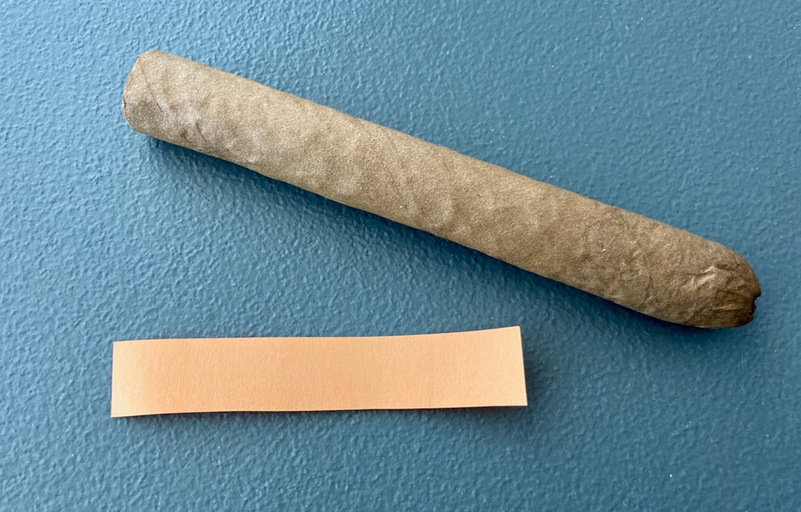
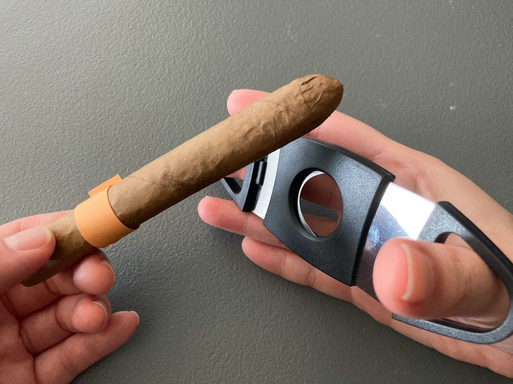
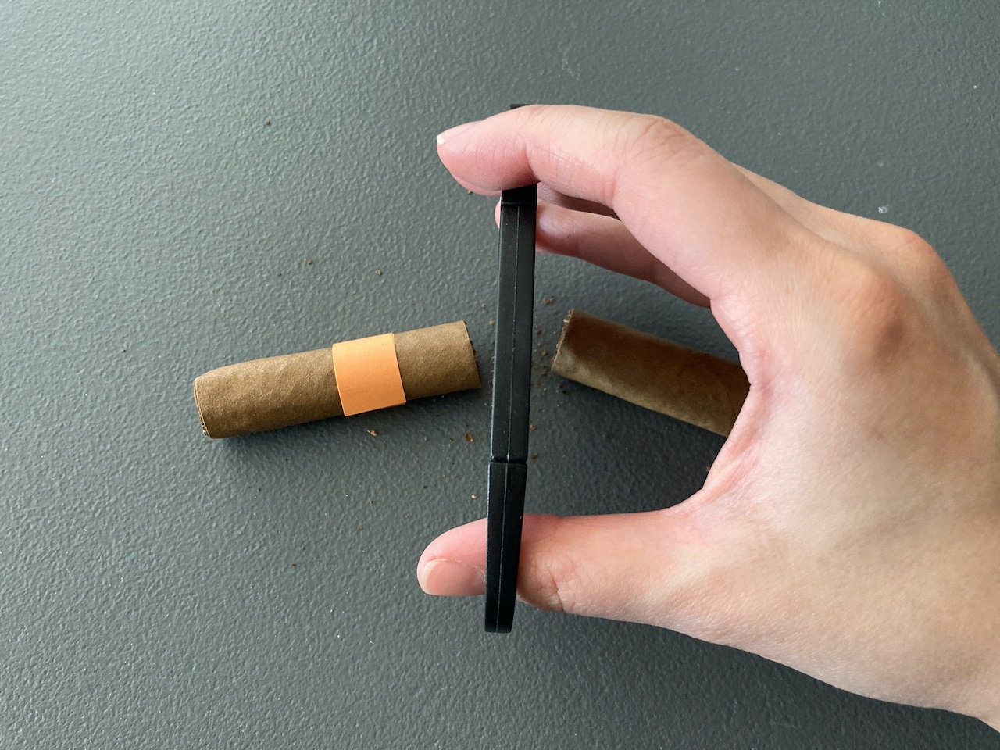
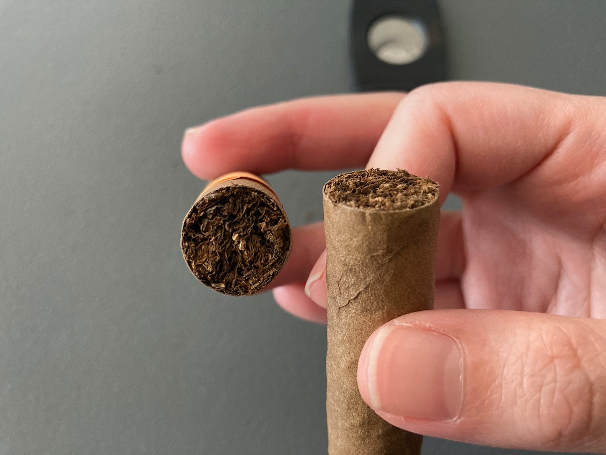
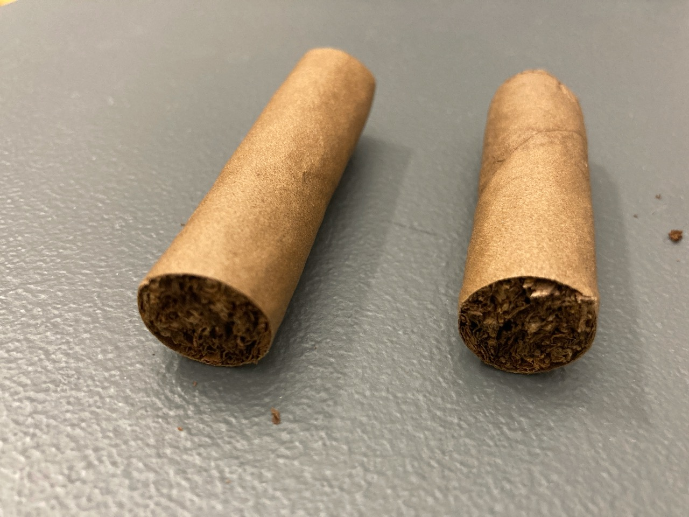
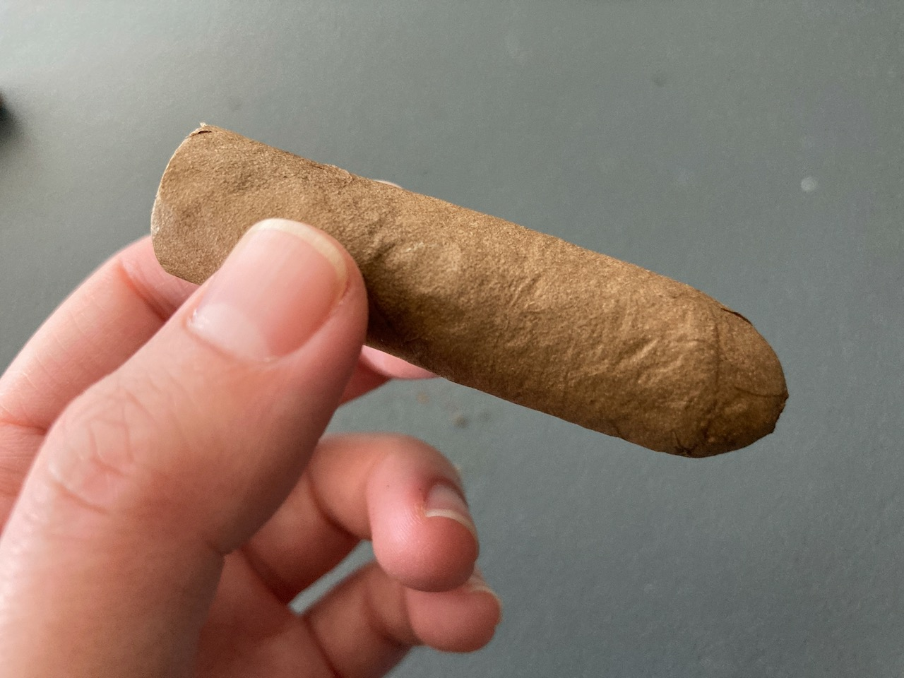
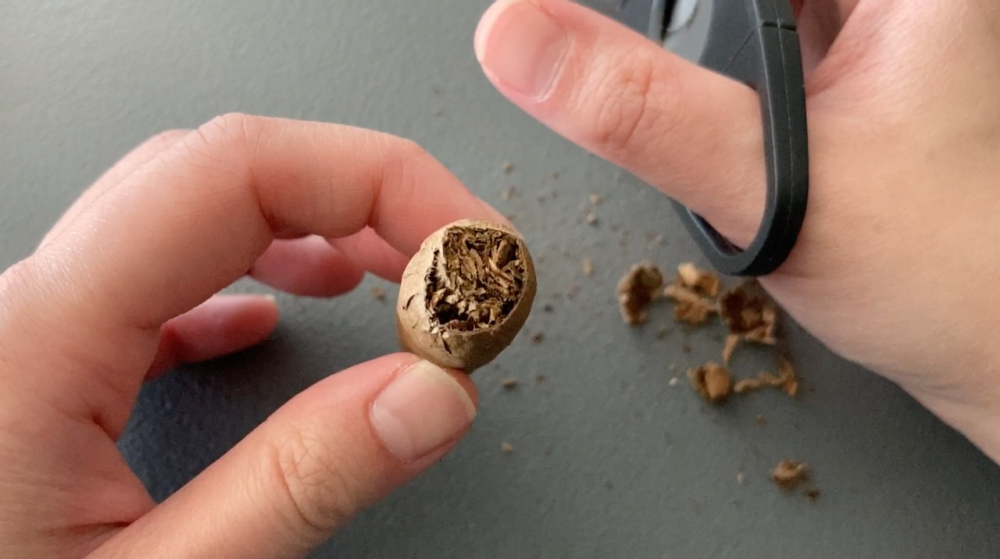
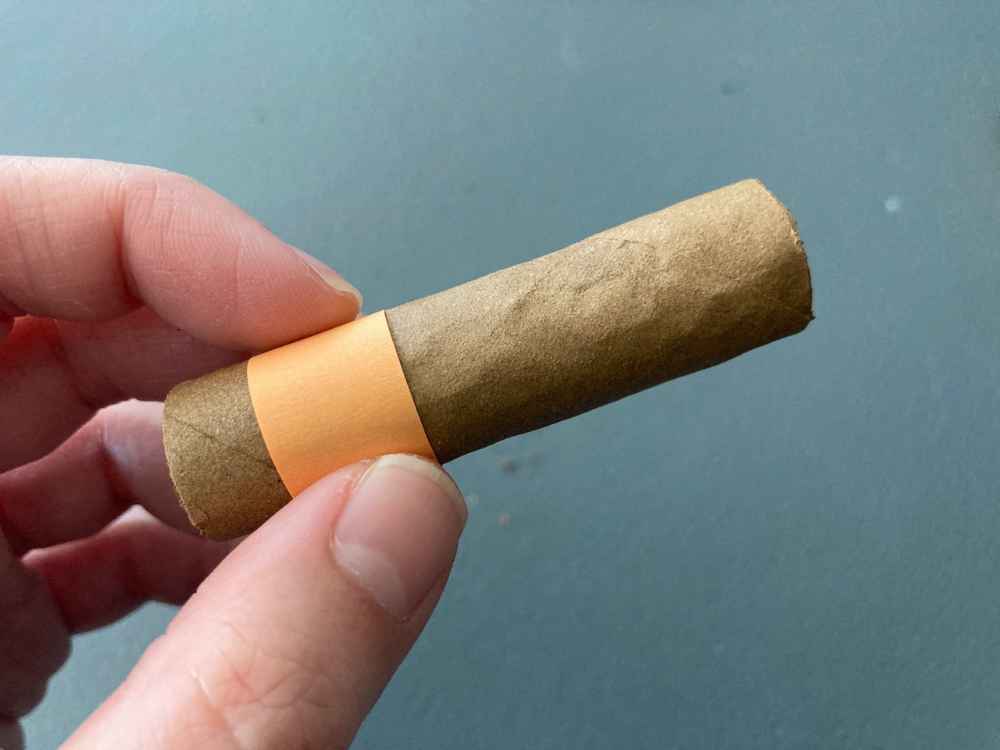
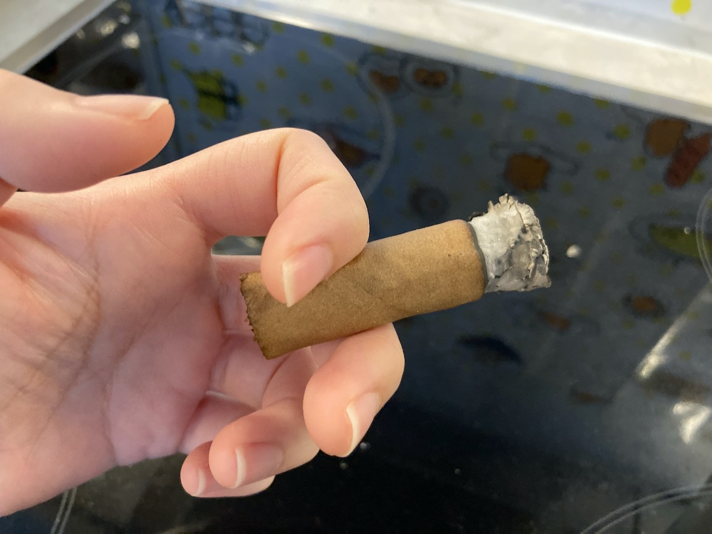
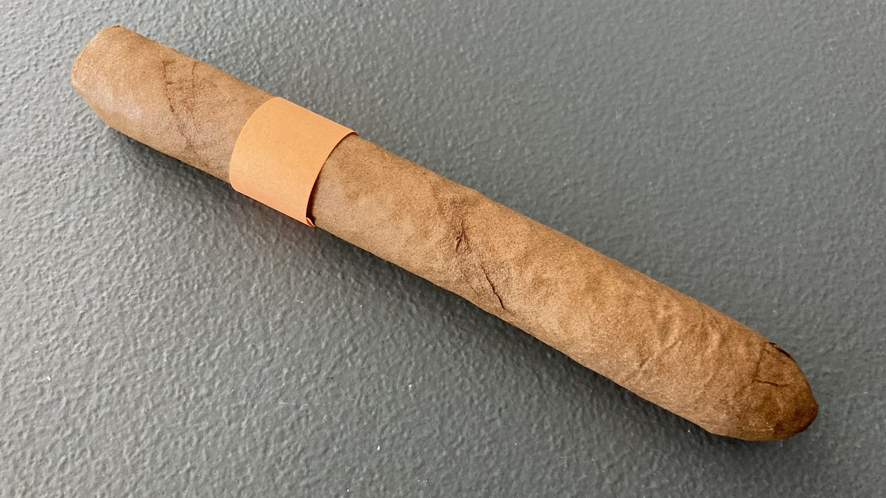

Cigar Log: Phillies - Blunt Strawberry 2
Similar to the first one, I cut the cigar in half. What's different than the first one was that this one has water damage because I was trying to get a picture of a wet cigar. Yea, that sounds stupid, but anyways, here's my experience.

Just for the records, I dried this off completely and let it sit for 2 days after it was in contact with water. The wrapper is soggy from the water damage.
Preparation
When I cut the cigar in half last time, the bottom half of the wrapper leaf came off. This time, I tried to keep the
leaf on by wrapping it with a sticky note. However, after I cut it, I soon found out that this one actually stay in
place. 🤔 It doesn't need the sticky note at all! The wrapper leaf could be more sticky after the contact with
water, but I'm not fully sure if that is the cause.
   
Top Half
First half I was downstairs at my apartment. It was the first time that I was smoking outdoor during daylight. I
went down at about 7am in the morning on a Saturday. It was quite windy, but I managed to get the cigar lit.
I was watching some tutorial again on how to smoking and I realized that I probably draw too hard for most of my smoke in the past. So this time, I just took gentle light puffs and I was surprising able to taste more! Just very sweet! And also, to my surprise, it has quite a lot of smoke output even I was taking min-draws! 🌬
I did taste the sharpness as I had previously experienced with no wrapper though, which I rather unpleasant. Just as I thought I was going to finally get the strawberry taste, the cigar went out! 😦 It lasted only about 5-10min probably because of the strong wind. 😦😦😦
  I'm sorry that I didn't have a pic of this one on fire. It was nice but I forgot to bring my phone with me... I would've got some pretty decent shots. 😭
 
Bottom Half
I was going to grab my phone and go down again to finish this footer half, but it was getting busy. Since it was a
short smoke, I figured I just quickly finish it so I can try and get the strawberry flavour at ease. I was going to
smoke on the balcony, but my neighbour was awake. Thus, I turned on the hood fan and just smoked in the kitchen.
Unfortunately, I didn't get much from this. All I could taste was just smoke and I made my place full of smoke again, which I truly regret. I swear I'll never smoke inside my place again no matter how short the smoke it. It just wasn't worth it and the time to get the smoke out was annoying. I tasted even less flavours from it than when I was downstairs. 😦

Conclusion
At least that I know that I should take small gentle puffs next time when I'm outside. I think I'm more comfortable
with the half size now and I do get very little hint of strawberry in the after taste. I'm not sure if the water
washed off any taste. Having that said, it might take me a while to get to third one because I did not like the
sharp taste and didn't feel too well after this one. We'll see though. 🤐